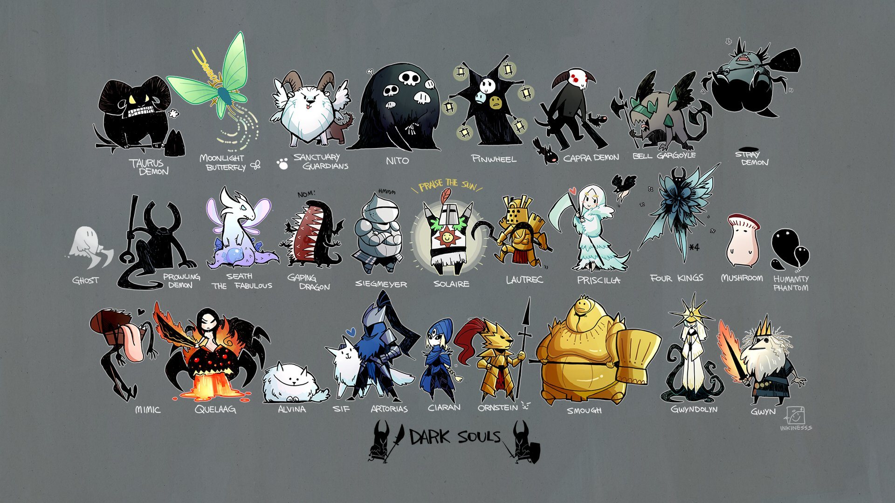

Boss Souls Wepons
Para construir uma Boss Soul Weapon você deve fazer o seguinte:
Comece com o tipo de arma base especificado abaixo e, em seguida, atualize-o para +5 com Titanite Shards usando um ferreiro como Blacksmith Andre na Undead Parish .
Atualize a arma ainda mais para +10 usando Large Titanite Shards . Para fazer isso, você deve primeiro dar o Large Ember (encontrado em The Depths ) para Andre.
Suba a arma usando o Ferreiro Gigante em Anor Londo, 5.000 almas e a alma do chefe para criar a arma da alma do chefe.
Você pode atualizar esta arma ainda mais usando Demon Titanite para um total de +5.

Boss Souls Wepons
- Moonlight Butterfly Horn
- Crystal Ring Shield
- Quelaag's Furysword
- Chaos Blade
- Dragon Bone Fist
- Golem Axe
- Dragonslayer Spear
- Smough's Hammer
- Greatsword of Artorias
- Greatsword of Artorias (Cursed)
- Greatshield of Artorias
- Darkmoon Bow
- Tin Darkmoon Catalyst
- Lifehunt Scythe
- Great Lord Greatsword
- Manus Catalyst
- Abyss Greatsword